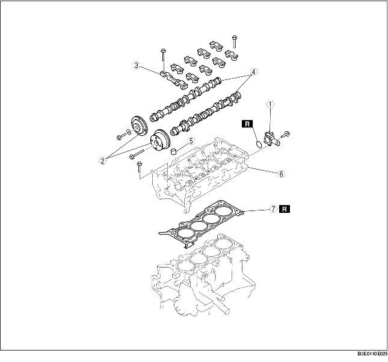
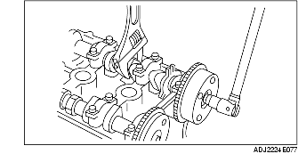
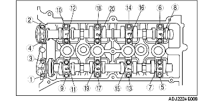
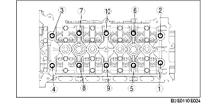

Cylinder head (I) disassembly
1. Disassemble in the order indicated in the table.

|
1
|
Water outlet
|
|
2
|
Camshaft sprocket, variable valve timing actuator
|
|
3
|
Camshaft cap
|
|
4
|
Camshaft
|
|
5
|
Tappet
(See Tappet Disassembly Note)
|
|
6
|
Cylinder head
|
|
7
|
Cylinder head gasket
|
Camshaft Sprocket, Variable Valve Timing Actuator Disassembly Note
1. Hold the camshaft using a suitable wrench on the cast hexagon as shown in the figure.

2. Loosen the camshaft sprocket installation bolt.
Camshaft Cap Disassembly Note
1. Inspect the camshaft end play. (See CAMSHAFT INSPECTION)
2. Loosen the camshaft cap installation bolts in two to three passes in the order shown in the figure, and then remove the camshaft caps.

Tappet Disassembly Note
- • The tappets are numbered to make sure they are assembled in their original positions. When removed, keep the tappets with the cylinder head from where they were removed. Do not mix the tappets.
Cylinder Head Disassembly Note
1. Loosen the camshaft cap installation bolts in two to three passes in the order shown in the figure, and remove them.
